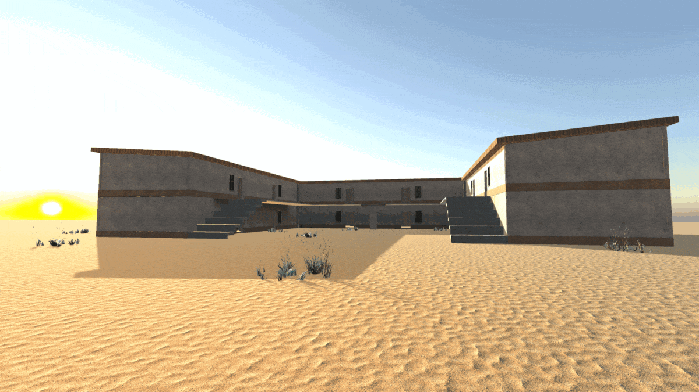
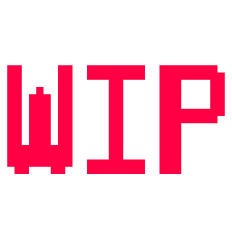

Through The Lens

The shoebox of photographs rattles with every hesitant step. The words of your late grandfather echo:
“In the blink of an eye, so much changed. I should have been there more.”
You hold up one of the photos, standing where it was taken, watching the elements align.
Seeing it as though you were taking it. But when you lower the photo, it’s all still there, like it was, 40 years ago.
In this 3D Exploration Puzzler, you alter the environment to explore an old apartment building and what’s been left behind with the use of photographs.
Specifically, when you line up a photo in the right location and perspective,
the contents of that photo are restored from the past to the present.
My Roles
- LEVEL DESIGN
- ART DIRECTION
- RESEARCH: HOUDINI
As a level designer, I have been bringing together the art, narrative, sound and other created assets for the game and turning them into one cohesive experience through my level design.
As art director, I deal directly with the external project artist(s) to help them understand the project vision while they are creating assets.
Also, I spend time helping those same artist(s) with any project pipeline related questions that they may have.
I have also been using Houdini to create digital assets for my personal research that goes along with this project.

Level Design Principles
With a game like Through The Lens, narrative has an extremely heavy focus.
Therefore, what is created by the narrative team is what I handle first and foremost
in my level designs. Most items within the world will have a story-driven reason for being there.
Level design for a game that has historical emphasis also requires a large deal of research on what
the world would be like culturally and architecturally during the intended time period of the game.
I pride myself on my ability to perform meaningful research into how and why things looked the way they did
in different areas (specifically 1970s New Mexico for this game).

Houdini Work
For my personal research, I have been focusing on making Houdini Digital Assets
to help dynamically assist with the creation of my level designs. I have been making HDAs related to
overgrown foliage as of late, but my next steps include taking our 3D artist's models and adding some
type of dynamic level of destruction/age to them that can be changed in-engine.
While Houdini is not a simple software to learn, my previous experience with Blender has helped immensely with navigating some of the learning curves.
Links
- Important links to be added soon!